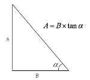
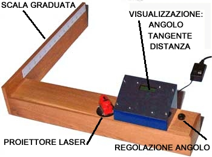
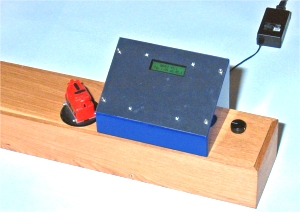

Il dispositivo dimostra in modo interattivo come, con l'applicazione della trigonometria, sia possibile misurare la distanza di un oggetto inaccesibile (ad es. la larghezza di un fiume o l'altezza di una albero) ricavandola dalla misura degli angoli sotto cui l'oggetto stesso viene visto da due punti costituenti la base di un triangolo sul cui vertice opposto è collocato l'oggetto di cui misuriamo la distanza dalla base.
Nel dispositivo realizzato e' possibile leggere su una scala graduata, avente inizio sulla base di un

triangolo rettangolo, il valore del punto di impatto di una marca luminosa inviata da un proiettore laser.
